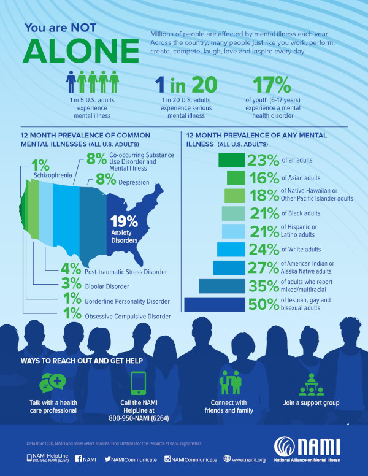

The importance of mental health
What is mental health?
Our mental health is a collection of our emotional, psychological, and
social well-being. All of this is what helps us think, feel, act, how we
handle our stress, being around others, and making health choices. Our mental
health follows through our whole life from childhood, adolescence, and adulthood.
Our mental health changes overtime based on certain factor some examples would be
working very long hours, taking care of a relative, and income challenges.
Does your mental health affect your overall health?
Yes. Our physical health has equal affect to our mental health. Examples
of this are any health issues such as diabetes either it be hereditary or being
diagnosed with it does have a hit on your mental health having you to change
your diet and become more active to prevent the diabetes from getting worse.
Another example is someone having a case of depression, the how it affects
your physical health is having less energy, being more tired, and
a change in eating habits. As you can see both are of equal and how one
can change other.
Mental health in youth
The mental health in youth ages 5 to 18 is important to there development, but
there are events that will happen causing there mental health to become poor.
One of them is having a hereditary trait that can be a factor of youth to have poor mental health.
A other factors for a child or teen is isolating themselves, creating issues
in making new friends, increase there chances of substance abuse, and much more. Having
a professional, support group and supporting parents will someone in youth
improve there mental health.
Metal health in adults
 The good mental health in adults allows healthy choices
and good decision making, handle stressors in certain events,
such as work and family for examples. Also getting along with
current or new collegues, and decrease the chances of
drugs and alcohol. But as for poor mental health of adults
there there hereditary, and outside factors that causes this,
an example is losing a job, divorce, or being born with a
trait.
The good mental health in adults allows healthy choices
and good decision making, handle stressors in certain events,
such as work and family for examples. Also getting along with
current or new collegues, and decrease the chances of
drugs and alcohol. But as for poor mental health of adults
there there hereditary, and outside factors that causes this,
an example is losing a job, divorce, or being born with a
trait.
Facts about mental health
Here are some facts about general metal health. These came from the
National Alliance on Mental Illness
